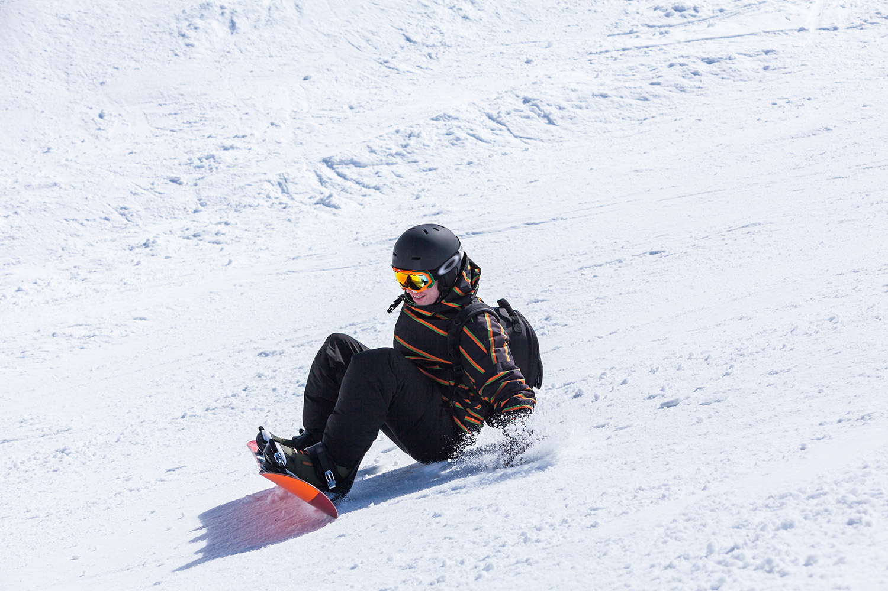
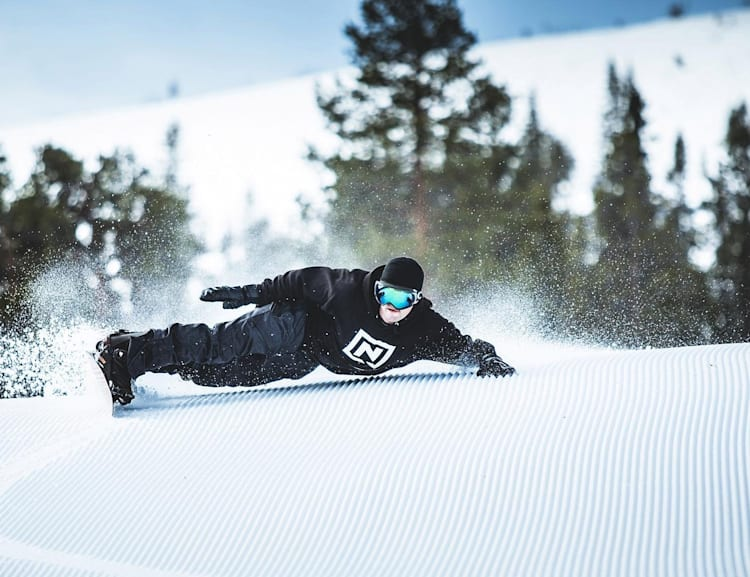
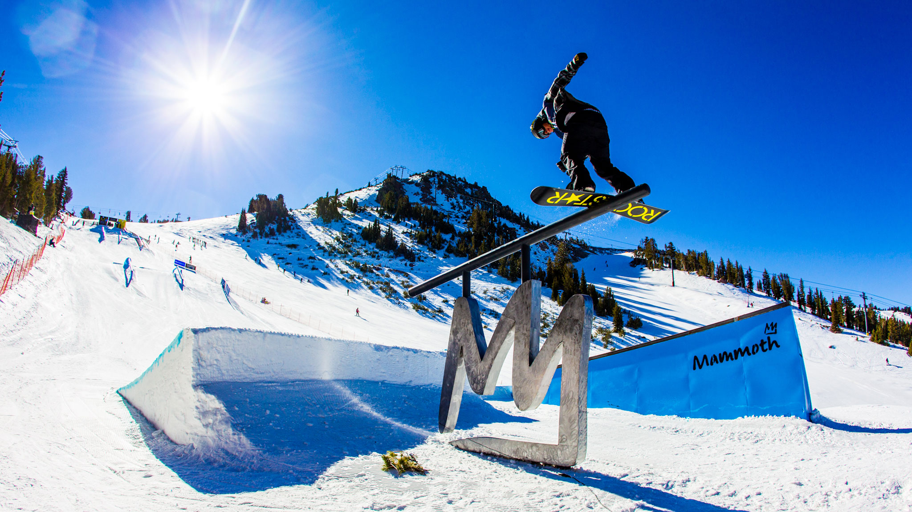
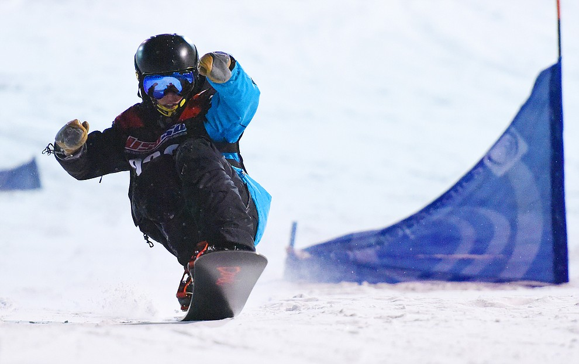

Snowboarding is an exhilarating winter sport that involves descending a snow-covered slope on a snowboard. It's a thrilling way to experience the mountains and the fresh powder. Whether you're a beginner, seasoned rider, thrill seaker, or professional, there's something for everyone in the world of snowboarding.
Snowboarding, a dynamic winter sport, traces its roots to the 1960s and 1970s when enthusiasts sought alternative ways to enjoy snowy slopes. Sherman Poppen is credited with inventing the first snowboard, known as the "Snurfer," in 1965, which consisted of a board with a rope for stability. The sport gained momentum in the 1970s, especially in the United States, with pioneers like Jake Burton Carpenter refining snowboard designs and introducing the binding system. Despite initial resistance from ski resorts, snowboarding's popularity soared, leading to its inclusion in the Winter Olympics in 1998. Today, snowboarding stands as a mainstream and diverse winter activity embraced globally for its thrilling maneuvers and creative expression on the mountains.
As of the present day, the world of snowboarding encompasses a vibrant spectrum of engagement, from professional competitions to the grassroots level. At the professional tier, elite athletes showcase incredible skill and creativity in events such as the Winter X Games and the Winter Olympics, pushing the boundaries of the sport with gravity-defying tricks and maneuvers. Meanwhile, at the amateur level, snowboarding continues to be accessible to enthusiasts of all ages and skill levels, fostering a community-driven ethos where individuals can hone their skills and share their passion for the mountains. Media coverage plays a crucial role, with social media platforms, documentaries, and traditional broadcasts providing extensive coverage, allowing fans to stay connected with their favorite riders and events. The current state of snowboarding reflects a dynamic and inclusive culture, where innovation and camaraderie thrive across diverse levels of engagement.
Enhance your understanding of snowboarding skills and various styles. From tricks to techniques, there's a lot to explore on the slopes.
   Start your snowboarding journey with the basics. Learn about balance, turning, and building confidence on the slopes.
Challenge yourself with advanced techniques and maneuvers. Master carving, jumps, and other skills to elevate your riding.
Experience the thrill of untouched powder and explore remote, challenging terrains. Learn about safety and navigation in the backcountry.
Unleash your creativity with tricks and jumps in terrain parks. Explore the world of slopestyle and freestyle snowboarding.
Feel the need for speed? Learn about the exciting world of snowboard racing, from slalom courses to downhill racing.